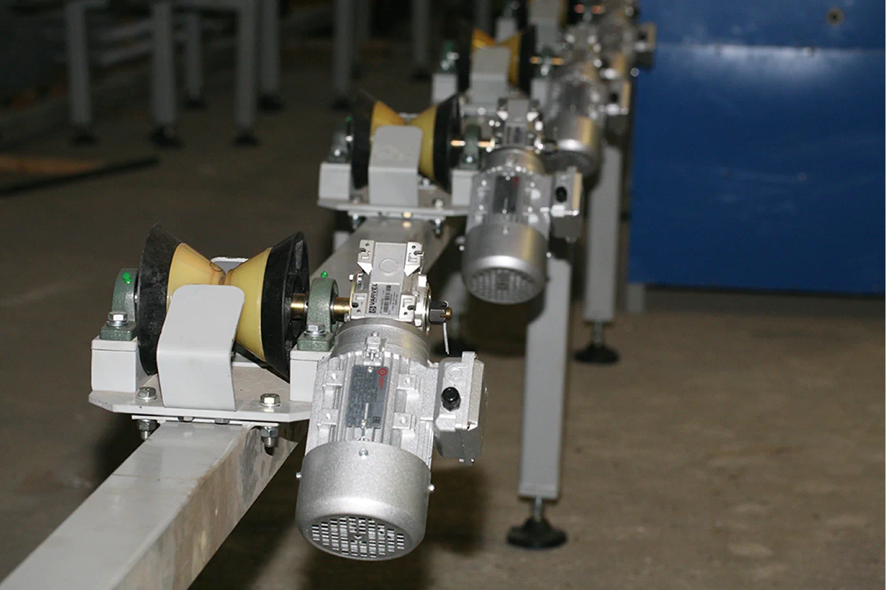

Производство
Выпуск технических средств для термостабилизации грунтов и инженерно-геокриологического мониторинга
Обособленное подразделение г. Владимир ООО НПО «Север» - это завод, оснащённый оборудованием по выпуску технических средств для термостабилизации грунтов и инженерно-геокриологического мониторинга. Производственные мощности завода позволяют в срок и без потери качества обеспечить производство и отгрузку значительных объёмов термостабилизаторов и сопутствующей продукции. Завод термостабилизаторов имеет техническое оснащение, которое позволяет производить весь производственный цикл без привлечения подрядных организаций.
В настоящее время проводятся работы по установке автоматической линии (разработка выполнена при поддержке Фонда содействия инновациям), которая упростит производство термостабилизаторов и позволит повысить производительность выпускаемой продукции. Складские запасы сырья, материалов, комплектующих и полуфабрикатов позволяет оперативно реагировать на потребности Заказчиков и поставлять изделия в минимально возможные сроки.

Термостабилизаторы грунта изготавливаются в соответствии с ТУ 3642-001-17556598-2014, сертифицированы по системе добровольной
сертификации (РОСС RU.АВ28.Н16655) и в области промышленной безопасности
(С-ЭПБ.001.ТУ.00121).
Станки с числовым программным управлением позволяют добиться наилучших результатов при выполнении токарных работ (Цех механической обработки)
Прессовые станки усилием до 100т. (Участок холодной штамповки)
Сварочные посты по сборке ТСГ (Цех механосборочных работ)
Готовая продукция

- 